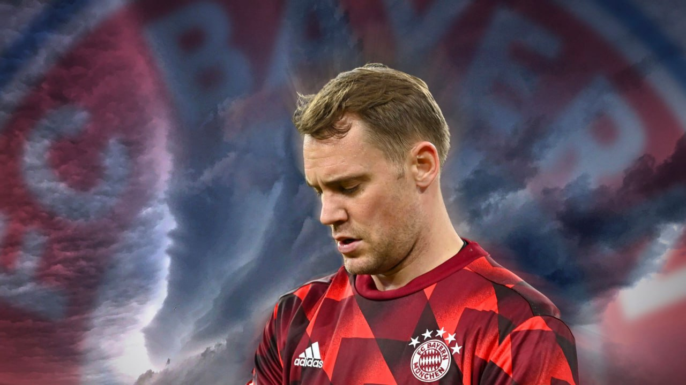

Former England Manager Sven-Goran Eriksson Dies at 76
Swedish football manager Sven-Goran Eriksson, who led England from 2001 to 2006, has passed away at the age of 76 due to pancreatic cancer. Eriksson was renowned for taking England to the World Cup quarter-finals in 2002 and 2006.
Transfer: You know spending limits – Premier League warns Chelsea over new players
Premier League chief executive, Richard Masters, has reminded Chelsea of transfer rules. Masters said every club has spending limits and must comply with them. He was responding to questions from reporters, who asked him about the Blues making nine signings already this summer.
What Mbappe said after scoring first Real Madrid goal
What Mbappe said after scoring first Real Madrid goal Real Madrid’s summer signing, Kylian Mbappe, has expressed his delight after scoring his first goal for the club. The France captain made his debut for Real Madrid in the UEFA Super Cup final against Atalanta on Wednesday. The 25-year-old scored Real Madrid’s second goal as the Spanish LaLiga champions defeated the Serie A side 2-0 in Poland.
Transfer: Strong, great player – David Raya hails Arsenal’s new signing
Arsenal goalkeeper, David Raya has hailed the club’s new signing, Riccardo Calafiori.
DAILY POST reports that Raya himself joined Arsenal this summer after spending the last season on loan from Brentford.
He has now heaped praise on Arsenal’s second signing this summer, Calafiori.
Transfer: Ivan Toney receives £15.5m offer, Arsenal forward leaves Emirates
Brentford striker Ivan Toney has reportedly been offered a £15.5 million-per-year deal by Saudi Pro League side Al-Ahli. According to Foot Mercato, the England international is the subject of a three-year contract offer by Al-Ahli. Toney’s current contract with Brentford will expire next summer.
Arsenal finally reach verbal agreement to sign Mikel Merino from Real Sociedad
Arsenal have finally reached an agreement to sign their top midfield target from Real Sociedad. The Gunners agreed personal terms with midfielder Mikel Merino last month, but the transfer saga dragged into August due to a gap in the valuation. After multiple rounds of negotiations, Sociedad president Jokin Aperribay travelled to London earlier this week to finalise a suitable deal with the Gunners. Read more
EPL: I don’t understand – Ian Wright baffles by Ten Hag’s decision on Man Utd captain
Arsenal legend, Ian Wright, has said he was baffled by Manchester United manager, Erik ten Hag’s tactical decision to substitute captain Bruno Fernandes during their Premier League defeat to Brighton at the weekend. Recall that Brighton defeated Man United 2-1 in the Premier League. Goals from Danny Welbeck and Joao Pedro gave the hosts the victory over the Red
Courtois steps away from Belgium national team, gives reasons
Transfer: Raheem Sterling gives Chelsea conditions to leave club
Transfer: Man United identify Casemiro’s replacement
Neur announced retirement
Manuel Neuer announced his retirement from international football with Germany’s national team.

The 38-year-old disclosed this in a video post on his official Instagram account.
The Bayern Munich veteran shot-stopper represented Germany at the Euro 2024 where they crashed out in the quarterfinal.